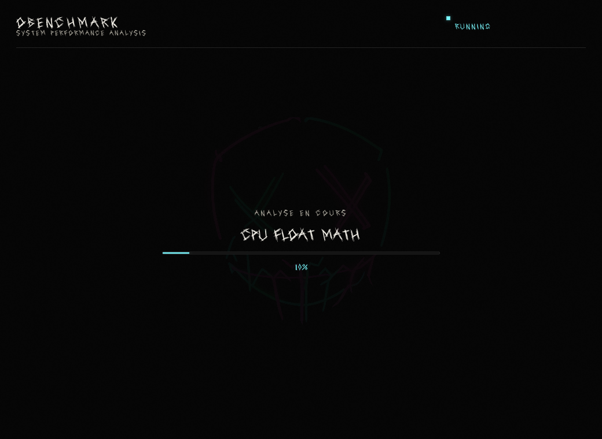

OBenchmark
Outil de benchmark open-source multiplateforme écrit en Rust. Mesure les performances CPU (multi-cœur, calculs entiers/flottants, tri, compression, cryptographie), mémoire (lecture/écriture cache/non-cache, latence, multi-thread) et disque (lecture/écriture séquentielle, IOPS aléatoires). Système de score normalisé avec interface graphique Slint et export JSON des résultats.